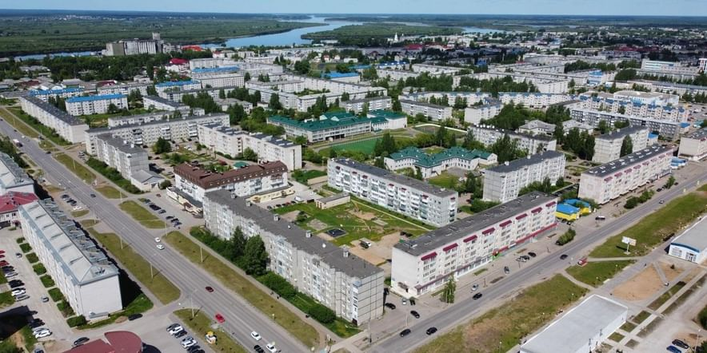
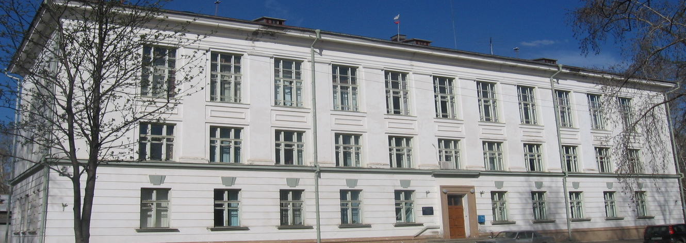
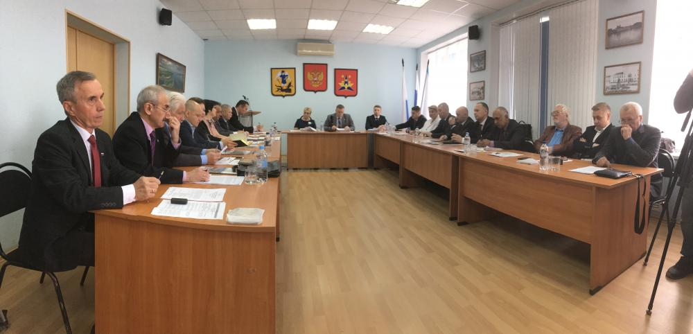

Власть
Власть Правовой статус муниципального образования Муниципальное образование «Котласский муниципальный район» (краткое наименование – МО «Котласский муниципальный район»), далее по тексту –муниципальный район, наделен статусом муниципального района, находится в составе Архангельской области, является ее неотъемлемой частью и состоит из городских и сельских поселений, объединенных общей территорией, границы которой устанавливаются законом Архангельской области.
Местное самоуправление Местное самоуправление в муниципальном образовании «Котласский муниципальный район» – форма осуществления населением муниципального образования своей власти, обеспечивающая в пределах, установленных Конституцией Российской Федерации, федеральными законами, а в случаях, установленных федеральными законами, – законами Архангельской области, самостоятельное и под свою ответственность решение населением муниципального образования непосредственно и (или) через органы местного самоуправления вопросов местного значения, исходя из своих интересов, с учетом исторических и иных местных традиций.
Население муниципального образования «Котласский муниципальный район» Население муниципального образования «Котласский муниципальный район» – постоянно или преимущественно проживающие на территории муниципального образования «Котласский муниципальный район» граждане Российской Федерации, а также иностранные граждане, обладающие правами в соответствии с международными договорами и законами Российской Федерации избирать и быть избранными в органы местного самоуправления.
По итогам конкурса состоявшегося 20 марта 2018 года кандидатура Татьяны Валентиновны Сергеевой была представлена комиссией для избрания на должность Главы муниципального образования «Котласский муниципальный район». На сессии Собрания депутатов муниципального образования «Котласский муниципальный район» 23 марта 2018 года Татьяна Валентиновна избрана Главой муниципального образования «Котласский муниципальный район», 18 апреля вступила в должность.
Татьяна Валентиновна Сергеева родилась 25 августа 1967 года в поселке Тулубьево Котласского района Архангельской области.
Трудовую деятельность начала в 1984 году старшей пионервожатой в Песчанской средней школе Котласского РОНО.
В Песчанской школе, где Татьяна Валентиновна трудилась 11 лет, и прошла путь от пионервожатой до заместителя директора по воспитательной работе.
В 1992 году окончила Поморский государственный педагогический институт им. М.В. Ломоносова, получив квалификацию учителя истории и обществоведения по специальности «История».
С 1995 по 2001 работала учителем истории и обществознания, заместителем директора по воспитательной, учебно-воспитательной работе в общеобразовательных учреждениях Котласского района, г. Северодвинска, г. Котласа.
С декабря 2001 года Татьяна Валентиновна замещала должность ведущего специалиста по делам женщин, семьи и молодежи, ведущим специалистом отдела по организационно-контрольной работе и общественным связям, руководителем аппарата, заведующим отделом образования администрации муниципального образования «Котласский муниципальный район».
С 2012 г. по 2015 г. совмещала работу заведующего отделом образования с выполнением обязанностей заместителя главы администрации по социальным вопросам.
В 2012 году приказом Минобрнауки России награждена Почетной грамотой Министерства образования и науки Российской Федерации за значительные успехи в организации учебно-методической работы, оказание практической помощи работникам образования, эффективное и действенное управление образовательными учреждениями.
В 2016 году приказом Минобрнауки России награждена ведомственной наградой Министерства образования и науки Российской Федерации и присвоено почетное звание «Почетный работник общего образования Российской Федерации» за значительные успехи в организации учебно-методической работы, оказание практической помощи работникам образования, эффективное и действенное управление образовательными учреждениями и плодотворный труд.
С мая 2017 года решением Собрания депутатов МО «Котласский муниципальный район» назначена на должность временно исполняющего полномочия главы муниципального образования «Котласский муниципальный район».
В 2017 году распоряжением Председателя Архангельского областного Собрания депутатов награждена Почетной грамотой Архангельского областного Собрания депутатов за заслуги в развитии системы образования, большой личный вклад в реализации задач местного самоуправления на территории муниципального образования «Котласский муниципальный район» и в связи с юбилейным днем рождения.
Администрация МО «Котласский муниципальный район»
Администрация МО «Котласский муниципальный район» (далее по тексту – администрация муниципального района) – орган местного самоуправления, осуществляющий исполнительно - распорядительные функции.
Администрация муниципального района является юридическим лицом.
Администрация муниципального района осуществляет свою деятельность на основании Устава МО «Котласский муниципальный район» и Положения об администрации муниципального района.
Администрацией муниципального района руководит глава администрации муниципального района на принципах единоначалия.
Глава администрации муниципального района
1. Главой администрации муниципального района является лицо, назначаемое Собранием депутатов муниципального района на должность главы администрации муниципального района по контракту, заключаемому по результатам конкурса на замещение указанной должности.
Конкурс проводится конкурсной комиссией в порядке определенном Собранием депутатов муниципального района.
2. Глава администрации муниципального района осуществляет свои полномочия на постоянной основе и не вправе заниматься предпринимательской, а также иной оплачиваемой деятельностью, за исключением преподавательской, научной и иной творческой деятельности.
При этом преподавательская, научная и иная творческая деятельность не может финансироваться исключительно за счет средств иностранных государств, международных и иностранных организаций, иностранных граждан и лиц без гражданства, если иное не предусмотрено международным договором Российской Федерации или законодательством Российской Федерации.
Глава администрации муниципального района не вправе входить в состав органов управления, попечительских или наблюдательных советов, иных органов иностранных некоммерческих неправительственных организаций и действующих на территории Российской Федерации их структурных подразделений, если иное не предусмотрено международным договором Российской Федерации или законодательством Российской Федерации.
3. Глава администрации муниципального района должен соблюдать ограничения и запреты и исполнять обязанности, которые установлены Федеральным законом от 25 декабря 2008 года №273-ФЗ «О противодействии коррупции» и другими федеральными законами.
4. В своей деятельности глава администрации района подконтролен и подотчетен Собранию депутатов муниципального района и несет персональную ответственность за выполнение возложенных на администрацию муниципального района и ее отраслевых (функциональных) органов задач и осуществление ими своих функций.
5. Полномочия главы администрации муниципального района начинаются со дня его назначения Собранием депутатов муниципального района.
6. Глава администрации муниципального образования «Котласский муниципальный район»:
1) подконтролен и подотчетен Собранию депутатов муниципального образования «Котласский муниципальный район»;
2) представляет Собранию депутатов муниципального образования «Котласский муниципальный район» ежегодные отчеты о результатах своей деятельности и деятельности администрации муниципального образования «Котласский муниципальный район», в том числе о решении вопросов, поставленных Собранием депутатов муниципального образования «Котласский муниципальный район»;
Собрание депутатов
1. Собрание депутатов – представительный орган местного самоуправления, обладающий правом принимать от имени населения муниципального района решения по вопросам местного значения и представлять интересы населения в отношениях с органами государственной власти, другими муниципальными образованиями, а также с предприятиями, учреждениями и организациями и другими лицами.
2. Собрание депутатов состоит из пятнадцати депутатов, избираемых на основе всеобщего, равного, прямого избирательного права при тайном голосовании в соответствии с законом Архангельской области и настоящим Уставом.
3. Собрание депутатов считается правомочным, если в его состав избрано не менее 2/3 депутатов.
4. Собрание депутатов принимает решения на основе коллегиальности, руководствуясь Конституцией РФ, действующим законодательством и положениями настоящего Устава.
Полномочия Собрания депутатов
1. В исключительном ведении Собрания депутатов находятся:
принятие Устава муниципального образования и внесение в него изменений и дополнений;
1) утверждение местного бюджета и отчета о его исполнении;
2) установление, изменение и отмена местных налогов и сборов в соответствии с законодательством Российской Федерации о налогах и сборах;
3) принятие планов и программ развития муниципального образования, утверждение отчетов об их исполнении;
Территориальная избирательная комиссия
Адрес: г. Котлас, пл. Советов, д. 9, каб. 15.
Телефоны: (881837) 2-11-40 (тел., факс), 5-18-19
Численность избирателей, участников референдума, зарегистрированных на территории Котласский муниципальный округ Архангельской области по состоянию на 1 января 2023 года составляет 14942.